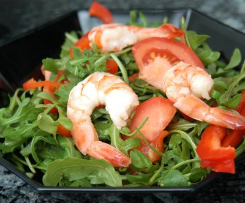

| Leichte Hauptspeise für 4 Personen: | |
| 600g | Krevettenschwänze, geschält |
| 150g | Rucola |
| 1 | rote Peperoni |
| 2 | kleine, reife Tomaten |
| 2 El | Kapern |
| 2 El | Aceto Balsamico |
| 4 El | Olivenöl |
| schwarzer Pfeffer aus der Mühle | |
| Meersalz | |
Zubereitungszeit: ca 35 Minuten, Kochzeit 15 Minuten
Die Krevetten unter fliessendem kalten Wasser waschen, trocken tupfen und zur Seite stellen. Rucola putzen, waschen und trocken schleudern. Die Stiele etwas kürzen und die Blätter quer halbieren. Die rote Peperoni halbieren, von Kernen und Scheidewänden befreien, waschen, vierteln und in feine Streifen schneiden. Die Tomaten waschen und vierteln und dabei die Stielansätze entfernen.
In einer kleinen Schüssel 4 Esslöffel Olivenöl, Aceto Balsamico, die Kapern, Salz und Pfeffer aus der Mühle zu einer Vinaigrette verrühren.
Etwas Öl in einer Bratpfanne erhitzen und die Krevetten darin rundherum 2 bis 3 Minuten braten. Aus der Pfanne nehmen, zur Seite stellen und etwas abkühlen lassen.
Die Rucolablätter mit den Tomaten, den Peperonistreifen und den gebratenen Krevetten in einer grossen Schüssel vorsichtig mischen. Auf kleine Teller verteilen, mit der Vinaigrette beträufeln und mit ofenfrischem Weissbrot servieren.
Migros, Rezeptbroschüre
Am 25.3.2005 zubereitet. Recht gut. Allerdings sollten die Krevetten irgendwie mariniert werden. Die warmen Krevetten erst am Schluss auf den Salat tun.
Am 16.12.2009 habe ich die Krevetten in Öl mit Chilis und Ingwer mariniert und das schmeckte sehr fein.
@LINKBACK_TAG@ @WAKELOCK@